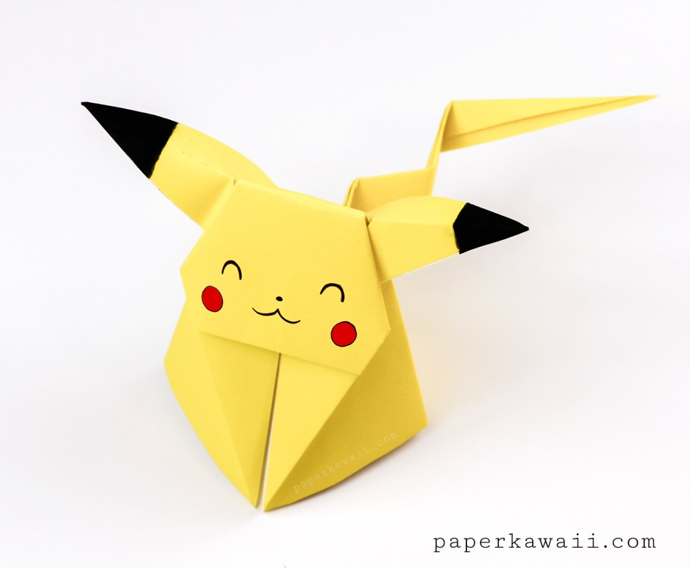
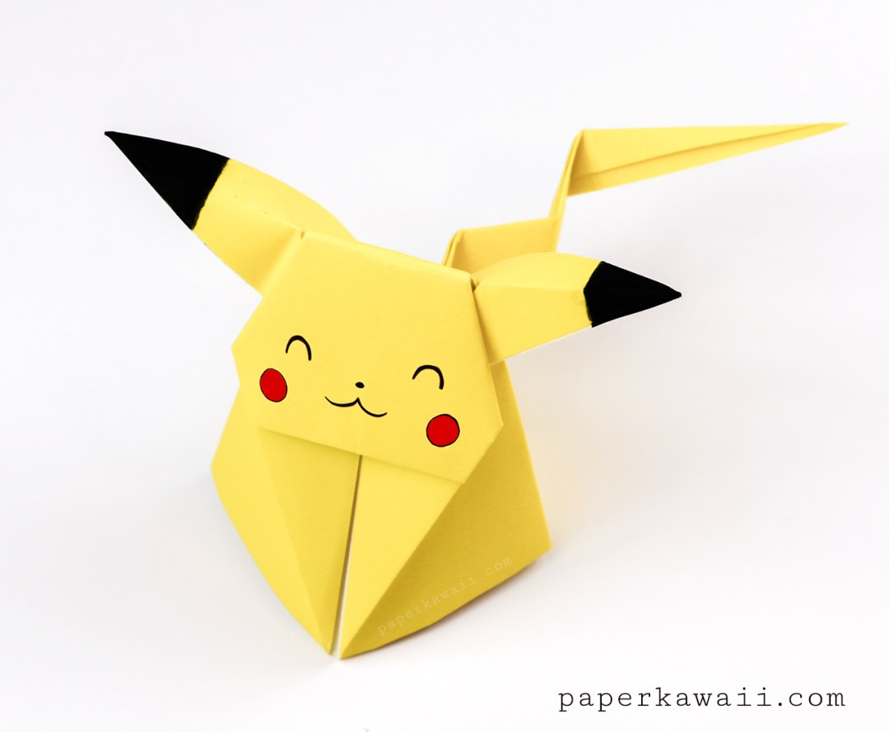

Is the art of paper folding, which is often associated with Japanese culture. In modern usage, the word "origami" is used as an inclusive term for all folding practices, regardless of their culture of origin. The goal is to transform a flat square sheet of paper into a finished sculpture through folding and sculpting techniques. Modern origami practitioners generally discourage the use of cuts, glue, or markings on the paper. Origami folders often use the Japanese word kirigami to refer to designs which use cuts. The small number of basic origami folds can be combined in a variety of ways to make intricate designs. The best-known origami model is the Japanese paper crane. In general, these designs begin with a square sheet of paper whose sides may be of different colors, prints, or patterns. Traditional Japanese origami, which has been practiced since the Edo period (1603–1867), has often been less strict about these conventions, sometimes cutting the paper or using nonsquare shapes to start with. The principles of origami are also used in stents, packaging, and other engineering applications.
These Are Some Examples

 
